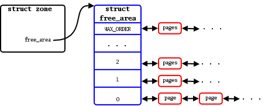
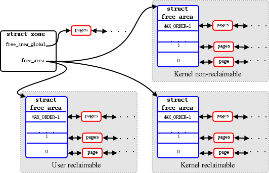

Yet another approach to memory fragmentation
At a very high level, the kernel organizes free pages as shown in the diagram below.

The system's physical memory is split into zones; on an x86 systems, the zones include the small space reachable by ISA devices (ZONE_DMA), the regular memory zone (ZONE_NORMAL), and memory not directly accessible by the kernel (ZONE_HIGHMEM). NUMA systems divide things further by creating zones for each node. Within each node, memory is split into chunks and sorted depending on its "order" - the base-2 logarithm of the size of each block. For each order, there is a linked list of available blocks of that size. So, at the bottom of the array, the order-0 list contains individual pages; the order-1 list has pairs of pages, etc., up to the maximum order handled by the system. When a request for an allocation of a given order arrives, a block is taken off the appropriate list. If no blocks of that size are available, a larger block is split. When blocks are freed, the buddy allocator tries to coalesce them with neighboring blocks to recreate higher-order chunks.
In real-life Linux systems, over time, the larger blocks tend to get split up, to the point that larger allocations can become difficult. A look at /proc/buddyinfo on a running system will tend to show quite a few zero-order pages available (one hopes), but relatively few larger blocks. For this reason, high-order allocations have a high probability of failure on a system which has been up for a while.
Mel's approach is to split memory allocations into three types, as indicated by a new set of GFP_ flags which can be provided when memory is requested. Memory allocations marked by __GFP_USERRCLM are understood to be for user space, and to be easily reclaimable. In general, all that's required to reclaim a user-space page is to write it to backing store (if it has been modified). The __GFP_KERNRCLM flag marks reclaimable kernel memory, such as that obtained from slabs and used in caches which can, when needed, be dropped. Finally, allocations not otherwise marked are considered to not be reclaimable in any easy way.
Then, the buddy allocator's data structures are expanded to look something like this:

When the allocator is initialized, and all that nice, virgin memory is still unfragmented, the free_area_global field points to a long list of maximally-sized blocks of memory. The three free_area arrays - one for each type of allocation - are initially empty. Each allocation request, when it arrives, will be satisfied from the associated free_area array if possible; otherwise, one of the MAX_ORDER blocks from free_area_global will be split up. The portion of that block which is not allocated will be placed in the array associated with the current memory allocation type.
When memory is freed and blocks are coalesced, they remain within the type-specific array until they reach the largest size, at which point they go back onto the global array.
One immediate benefit from this organization is that the pages which are hardest to get back - those in the "kernel non-reclaimable" category - are grouped together into their own blocks. A single pinned page can prevent the coalescing of a large block, so segregating the difficult kernel pages makes the management of the rest of memory easier. Beyond that, this organization makes it possible to perform active page freeing. If a high-order request cannot be satisfied, simply start with a smaller block and free up the neighboring pages. Active freeing is not yet implemented in Mel's current patch, however.
Even without the active component, this patch helps the kernel to satisfy
large allocations. Mel gives results from a memory-thrashing test he ran;
with a vanilla kernel, only three out of 160 attempted order-10 allocations
were successful. With a patched kernel, instead, 81 attempts succeeded.
So the new allocation technique and data structures do help the situation.
What happens next remains to be seen, however; there seems to be a big
hurdle to overcome when trying to get high-order allocation patches
merged.
| Index entries for this article | |
|---|---|
| Kernel | Memory management/Large allocations |
Posted Feb 14, 2005 8:40 UTC (Mon)
by Nir (guest, #27440)
[Link] (1 responses)
Posted Feb 18, 2005 3:57 UTC (Fri)
by xoddam (subscriber, #2322)
[Link]
Posted Jan 8, 2006 9:53 UTC (Sun)
by yogeshom85 (guest, #34773)
[Link]
have active freeing implemented?
I have a question. I hope I am not too rude.
i am trying to understand whether high memory is visible in interrupt context ?
When sending/getting a buffer to disk or NIC from an application that mapped high memory pages ( > 1GB ) are they copied to a normal memory and then copied to the user buffer ?
Thank you.
Raz Ben Jehuda
razb@bitband.com
Yet another approach to memory fragmentation
Ultimately, the high-memory pages will be mapped temporarily into the mapping of high-memory pages
kernel address space.
Driver writers have the option of using a buffer in normal memory and
copy_to_user()/copy_from_user() functions to transfer data to/from
userspace. These functions hide the details of the virtual address
mapping.
Alternatively the driver can use get_user_pages() to 'pin' the userspace
pages into memory and kmap() to get the kernel address of each page.
kmap() will return the fixed address of a normal page, or map a high
memory page into the kernel. The pages must be released afterwards with
kunmap() (a noop if the page is normal) and page_cache_release().
Hi,Yet another approach to memory fragmentation
>Active freeing is not yet implemented in Mel's current patch, however.